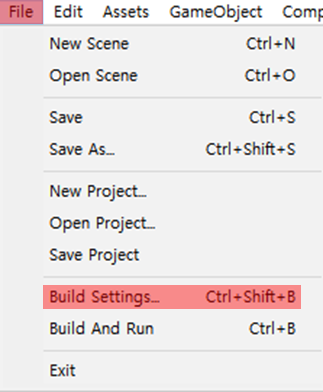
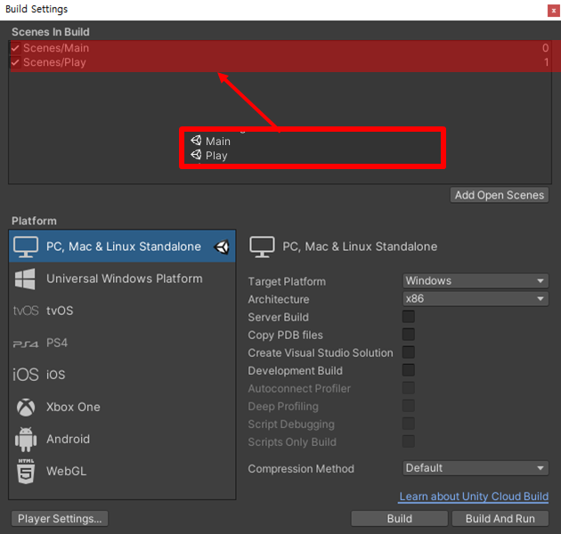

*개인적인 유니티 공부 내용을 기록한 포스팅 이기에 잘못된 내용이 있을 수 있으며 지속적으로 수정해 나갈 예정입니다.
*다음 글은 아직 미완성입니다.
[목차]
#1 SceneManager
#2 BuildSettings
#3 LoadScene
#1 SceneManager
SceneManager 클래스를 사용해 유니티에서 scene 전환을 제어할 수 있다. scene 전환 제어 방식은 동기화 방식과 비동기화 방식으로 나뉘는데, 동기화 방식은 씬을 호출하는 행동 이외에 다른 작업을 수행하지 않고 , 비동기화 방식은 씬을 호출하는 동시에 진행중인 작업을 실행한 뒤 호출이 완료되면 씬을 불러온다. 비동기화 방식의 대표적인 예시로 로딩화면이 있다.
또한 씬을 불러오는 모드를 설정할 수 있는데, Single 모드와 Addictive 모드로 구분한다. Single 모드는 현재 씬을 종료한 뒤 새로운 씬을 로드하는 방식이고 , Addictive 모드는 현재 씬 위에 추가적인 씬을 덮어 씌우는 방식이다.
우선 SceneManager를 사용하기 전에 다음 namespace 를 상단에 선언해 주어야 유니티에서 제공하는 씬 전환 기능을 사용할 수 있다.
using UnityEngine;
using UnityEngine.SceneManagement; //scene 이동 시 사용#2 BuildSettings
일단 서로 전환 하고자 하는 scene을 생성한 뒤 , BuildSettings에 scene을 추가해 주어야 한다. 유니티 엔진 우측 상단의 [File] > [Build Settings...] 를 클릭 하거나 단축키 [Ctrl + Shfit + B] 를 눌러 Build Setting 옵션을 켜준다.

다음으로 Projects 창에 존재하는 미리 제작해 둔 scene들을 Build Settings 의 Scenes In Build로, 드래그 앤 드랍 하여 추가 해준다.

#3 LoadScene
SceneManager 클래스의 LoadScene("씬이름") 을 사용해 씬을 동기적으로 호출할 수 있다. 괄호 안에는 불러올 씬의 이름을 적거나, BuildIndex를 넣어 주면 되는데, BuildIndex는 앞서 설정한 Build Settings의 Index값을 의미한다.
간단하게 [Main] scene의 Button을 클릭하면 [Play] scene으로 전환하는 코드를 작성해 보았다.
using System.Collections;
using System.Collections.Generic;
using UnityEngine;
using UnityEngine.SceneManagement;
public class Main : MonoBehaviour
{
public void PlayBtn()
{
SceneManager.LoadScene("Play");
}
}